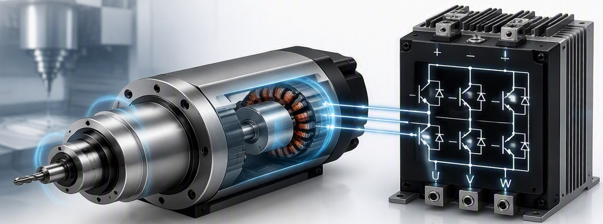

Ultra-High-Speed Motor Drives
Delay-aware MIMO control · TI C2000 · 100,000 rpm design speed
At high speed, PWM delays can destabilize a drive. I design delay-aware multivariable (MIMO) control for ultra-high-speed PMSMs and carry it from simulation to experimental setup.
95,000 rpm on hardware · 188% larger speed margin